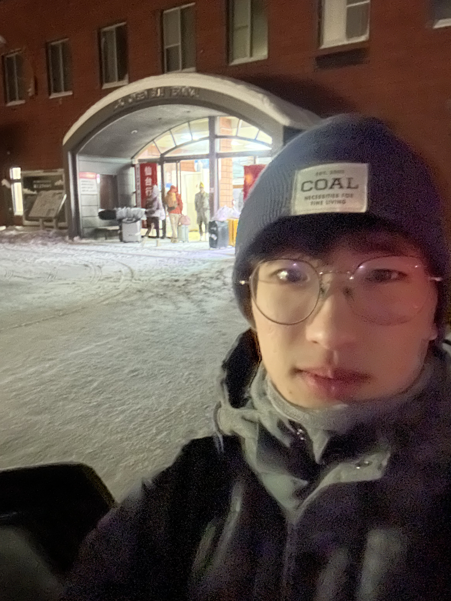

基本資料
- 姓名：林楊森
- 學號：110611043
- 系所：機械工程學系
- 年級：大四
- 專業領域：電腦視覺、無人機應用
關於我
目前是交大機械系跨域資工的大四學生，有幸在 Wolley tech 累積了一些韌體開發的實務經驗。參與過台北捷運黑客松，和團隊一起進入決賽並獲得第2名的成績。現在擔任交大 GDG on campus 的 Lead，希望能與更多同學分享技術與經驗。
對於程式應用在實際問題上有濃厚興趣，學習了 Python 的 OpenCV 和 Tello 函式庫來探索影像辨識和無人機控制的可能性。也嘗試過使用 Arduino 開發電動車控制系統。目前有幸在交大「計算攝影實驗室」參與電腦視覺和無人機應用的研究工作。
工作之餘，彈吉他和游泳是我放鬆心情的方式。偶爾的藝術創作讓我保持創意思維，閱讀和觀看運動賽事則是假期的休閒活動。相信平衡的生活能帶來更多靈感，也讓技術創新有了更廣闊的視野。
興趣與專長
程式開發
專注於嵌入式系統和電腦視覺應用，熟悉Python、Arduino等開發平台。
無人機技術
研究無人機控制和影像處理，致力於將理論知識應用於實際場景。
音樂與藝術
閒暇時彈吉他放鬆心情，享受藝術創作帶來的平靜與靈感。
運動與閱讀
熱愛游泳和觀看運動賽事，也透過閱讀拓展視野和知識。